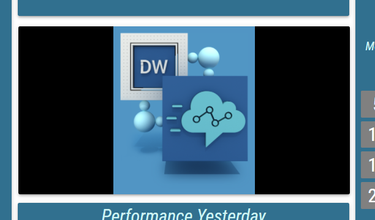
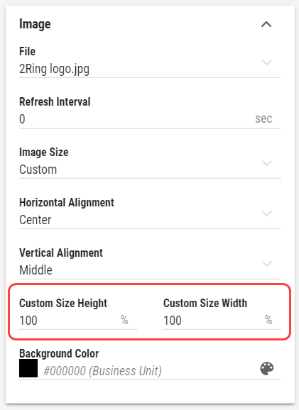

Image¶
The Image is a Segment containing a single image. An image found on the internet can be displayed. Additionally Images can be saved on the server, where DW is deployed.
For general information about this segment, see Image chapter.
- File
Required
For more information see Static content chapter.
Web URL or relative path of the server-based image or gif file, that should be displayed.Default images are stored in the distribution package in the Assets\Images folder in case, if any of them needs to be uploaded.
- Effects and Filters
Controls, adjusting the image, such as Brightness, Contrast, Opacity etc. Click to revert image to its default values.
- Horizontal Alignment
Required
Controls, where the image should be aligned on the horizontal axis.
Available options are Left, Center and Right
- Vertical Alignment
Required
Controls, where the image should be aligned on the vertical axis.
Available options are Top, Middle and Bottom
- Image Size
Required
Decides, how the image is adjusted to the Segment’s size.- Cover
The image is resized to cover the whole Segment, without deforming the image. No uncovered spaces are present. However one of image’s axis may overlap outside of the Segment’s boundaries.
Figure 1: Cover

- Contain
The image The image is resized to be fully displayed, in largest possible size, without deforming the image. Uncovered spaces, filled with the Background Color, are present.
Figure 2: Contain

- Fill
The image fully fills the entire Segment’s size. The image may be deformed. No uncovered spaces or overlapping occurs.
Figure 3: Fill

- Custom
When selected, Custom Size Height and Custom Size Width fields are displayed. These fields define size of the image in percentages of the Segment’s size.
Figure 4: Custom

- Background Color
Inheritable
For more information see Color field section.
Color, used as a background behind the Image. Background can be seen when Image is not configured to cover the entire size of the Segment or when image with transparent parts is selected.
- Refresh Interval
Required
Interval, at which the linked image should be refreshed. Useful, when source image tends to change frequently.